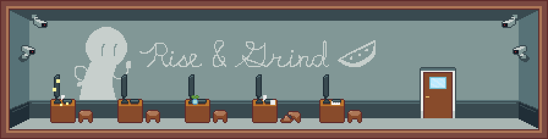
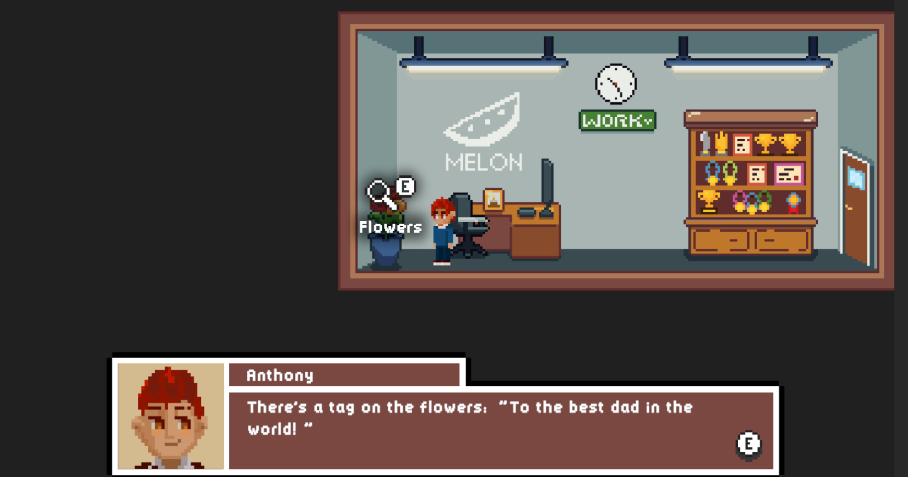
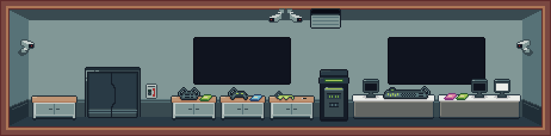

Made for the GMTK2025 game jam. A puzzle platformer game that was built in Unity for the GMTK2025 game jam on itch.io. The game is a robot who can only perform actions on loop. The player records 1 second of movement for the robot where it will repeat. The player can drag items onto the level to aid the robot to reach their goal. This game was made in 4 days centered around the theme “loop”.
Jillian Li - Game Designer, Game Developer, Level Designer
Tools
Aseprite
Unity & C#
Github
Timeframe
4 days [July 30, 2025 - December 3, 2025]
Focus
My focus during this project was to create strong environmental storytelling through the use of map design, level design, and cutscenes. My goal was to ensure that it would immerse players into the story, communicate narrative details, and expand upon the existing world.
Level Design
I was responsible for the environmental illustrations and some of the level design. During the level design process, we used FigJam to facilitate collaboration. We focused on introducing one mechanic at a time then combining them with previous features afterwards.
Progression should feel natural and difficulty should increase slowly. Levels should have multiple ways to solve them due to the nature of recording the player’s movement, and to reward creativity.

The office workspace. Oppressive company communicated with the company motto, separated desks, and security cameras.

The manager's office. The props are a representation of the love they have for their kid, as well as a hint to get the computer's password.

The research lab. High-tech and oppressing atmosphere created by using blue-grey, device props, and a high security camera presence.
Environmental
Gameplay was designed to be related to the player character’s task to communicate to the player what was happening in the narrative and indicate challenges the characters were facing. It served to show the character's different approaches to problems: Anthony's charisma and social skills versus Theo's technological and hacking skills.
This NPC deduction puzzle conveys Anthony’s (Ch1 player) approach to problems. The player deducts the correct dialogue option based on the NPC’s appearance and dialogue to try to pickpocket their keycard.This circuit puzzle focused on conveying Theo’s (Ch2 player) approach to problems. The player connects the two ends of the circuit. The purpose was to create a distraction by connecting the sewage vent to the lab room.
Challenges
One challenge was ensuring the difficulty progression increased at a small yet steady rate. Some of the level ideas we had sounded good on paper but difficult in execution due to the difficulty in recording the right movement.
To help solve this, additional background props were added to aid in visual guidelines, platforms expanded, and overall made each level more forgiving.
Dialogue 1: The NPC's initial dialogue before the events of the story during Chapter 1.Dialogue 1: The NPC's dialogue after the power goes out due to the actions of Chapter 2 player character.
Reflection
Designing how players navigate through puzzles can be difficult to predict in order to create the right sense of difficulty. Providing all the necessary tools does not mean the answer is clear and may create a sense of frustration, just as making it too obvious evokes boredom.
In the future, I would modify the tile map to have borders. Players found it difficult to time their actions, so more visual indicators would be helpful without making the solution obvious.